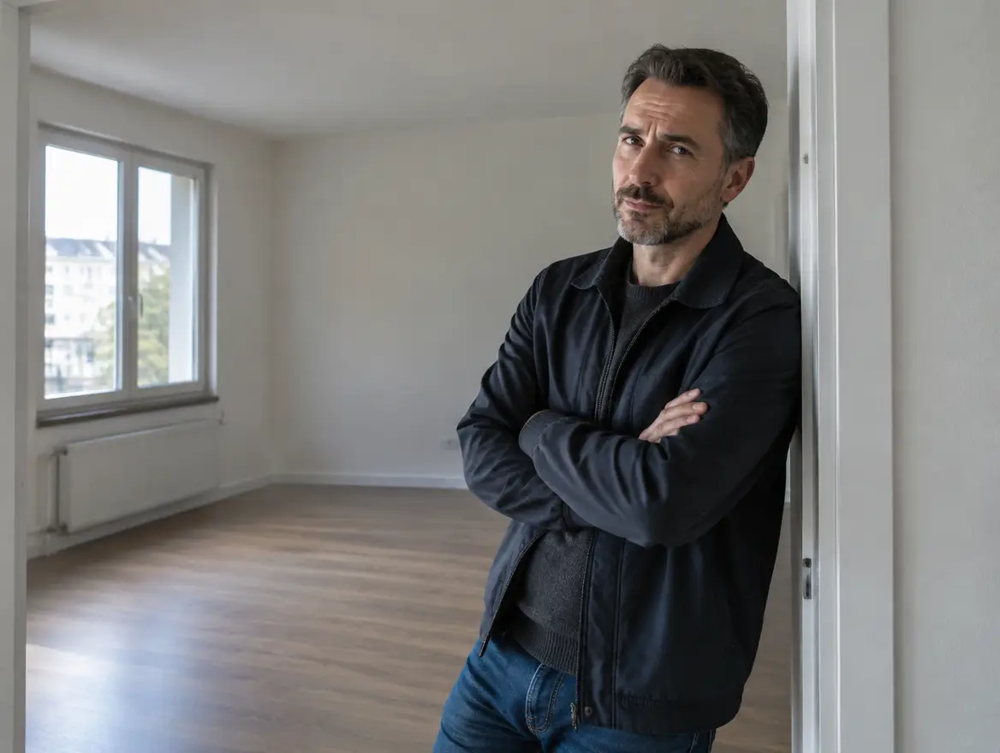

Nájemník neplatí: co dělat krok za krokem
Krátká odpověď: nejdřív písemná upomínka s termínem, pak výzva doporučeně. Po třech neuhrazených nájmech můžete dát výpověď bez výpovědní doby. Nikdy neměňte zámky ani nevypínejte energie — z poškozeného se stanete viník.

Postup podle zákona v 5 krocích
- Zavolejte, než napíšete.Většina prvních zpoždění je banalita — nová práce, dovolená, změna účtu. Hovor vyřeší víc než datovka.
- Písemná upomínka s termínem.E-mail stačí, ale dejte konkrétní datum úhrady. Od splatnosti běží zákonné úroky z prodlení.
- Výzva k úhradě doporučeně.Druhý měsíc bez platby = doporučený dopis s vyčíslením dluhu. Založí vám důkazní stopu pro výpověď i soud.
- Výpověď pro neplacení.Po dluhu ve výši tří nájmů lze vypovědět bez výpovědní doby (§ 2291 obč. zák.). Výpověď musí být písemná a doručená.
- Předání bytu, případně žaloba.Nevystěhuje-li se, rozhoduje soud — svépomoc je trestná. Dluh vymáhejte i po skončení nájmu, promlčení běží 3 roky.
Čeho se vyvarovat: výměna zámků, vypnutí elektřiny či vody, vstup do bytu bez souhlasu, vynášení věcí. Cokoli z toho obrací zákon proti vám — a nájemníkův dluh tím nezmizí.
Jak dlouho to trvá a co to stojí
Poctivě: u nespolupracujícího nájemníka počítejte s 6–12 měsíci a desítkami tisíc (ušlý nájem, právník, soudní poplatek). Přesně proto vznikla služba s garancí — riziko neseme my, ne vy.
Můžu strhnout dluh z kauce?
Ano, kauce slouží přesně k tomu — ale až při skončení nájmu, ne průběžně. Průběžné čerpání kauce musí umožňovat smlouva.
Co když nájemník neplatí jen energie?
Dluh na službách je také dluh z nájmu — počítá se do „tří nájmů“ pro výpověď. Vyúčtování si nechte potvrzené.
Pomůže trvalý pobyt nájemníka byt vyklidit?
Trvalý pobyt je jen evidenční údaj — právo bydlet nezakládá a vyklizení nebrání. Zrušíte ho na úřadě po skončení nájmu.
S variantou KLID se vás tenhle článek netýká.
Smlouvu s nájemníkem neseme my. Když přestane platit, vám nájem chodí dál z naší garance — a výměnu člověka řešíme my, obvykle do tří měsíců.
Chci vidět garance a ceník